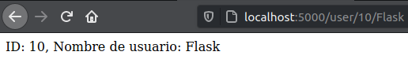
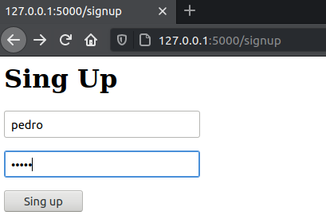

Los temas van de forma secuencial o si tienes duda, simple presiona para empezar a ver los ejemplos
Cuando trabajas con Flask es muy recomendable utilizar virtualenv, el cual es una herramineta para crear entornos de python aislados en este caso al trabajar con python puede que cada uno de tus proyectos tenga diferentes instalados, utilizando virtualenv evitaras conflictos despues
Primero vamos instalar virtualenv, utilizando pip el gestor de paquetes de python, utiliando pip install virtualenv
Crear la capeta donde estara nuestro proyecto
Crear el entorno virtual dentro de nuestra carpeta con el comando virtualenv venv (En este ejemplo se llama venv)
Para entrar dentro de nuestro entorno virtual, una de las formas es source bin/activate estando dentro nuestra carpeta venv previamente creada y para ver que ha funcionado al lado de tu nombre de usuario aparecera entre parentesis el nombre de la carpeta
Para poder empezar a utilizar este microframework flask, solo tenemos que hacer lo siguiente
A la misma altura que nuestro carpeta "venv" creamos uns carpeta donde estaran nuestros trabajos (src)
Dentro de ella creamos el archivo para trabajar
Instalamos flask pip install flask
Por ultimo solo tenemos que darle python app.py (app.py es el nombre de nuestro archivo)
Por defecto el puero que se activa es 5000, en el navegador solo damos localhost:5000

Antes de empezar a utilizar flask, su estructura que maneja es de la siguiente manera Primero tus archivos python y a la misma altura la carpeta templates en la cual iran tus html y tus archivos como css,imagenes, Javascript, en la carpeta static

Unas de las principales caracteristicas de Flask, la cual es muy comodo es la creacion de rutas Consiste en crear una ruta, la cual se le asigan una metodo que se le asigna a ella. Una forma de enseñarlo seria de esta forma:
from flask
import Flask
app = Flask(__name__)
#Aqui creamos una ruta con '/' indicamos la raiz
@app.route("/")
#con su metodo
def index
():
return
"Hello world"
if __name__
== "__main__" :
app.run(debug
= True
)
Pero podemos crear rutas con diferentes nombres de una manera tan sencilla como hacer esto
#creamos otra ruta con otro nombre
#'/hola' indica la nueva raiz
@app.route("/hola")
def hola
():
return
"hola"
Podemos crear rutas por defectos o que reciban alguna variable, de tipo String, Int, Float y dicha variable ser utilizada en el metodo. Como se muestra a continuación, vemos que al no poner nada entra a una pagina con una variable por defecto (imagen 1), pero al darle una dato podemos ver el dato recibido en pantalla (imagen 2)
#esta ruta es por defecto
@app.route("/usuario/")
# ruta con el dato que recibe
@app.route("/usuario/<string:user>")
def usuario
(
user =
"por defecto no hay nombre"
):
return
"El usuario es " + user
Un ejemplo practico seria al recibir el id y el usuario, para asi mostrar una pagina personalizada para la persona
# Creamos lsa dos rutas una opcional y una donde si
entro
@app.route
("/user/")
@app.route
("/user/<string:id>/<string:username>")
def usuario
(
id =
0,
username =
"No existe"
):
return
"ID: {}, Nombre de usuario:
{}".format(id,username)

Los templates (platillas) es una forma de representar datos de forma legible ahora bien en Flask nos deja mostar estas platillas de forma mas practica, podemos llamar nuestro archivo desde una carpeta llamada Templates utilizando otro de sus metodos de Flask, el cual es render_template. Tenemos el siguinete codigo:
from flask
import Flask, render_template
# Nosotros podemos indicar el lugar de la carpeta templates
con:
# app = Flask(__name__, template_folder="."), por defecto
Flask la busca en una carpeta llama 'templates'
app = Flask(__name__)
@app.route("/")
def index
():
# Aqui llamamos el archivo index.html
return render_template(
"index.html")
if __name__
== "__main__" :
app.run(debug
= True
)
Las carpetas estan acodadas de esta manera, no lo olvides
Se veria de esta forma
<!DOCTYPE html>
<html lang="en">
<head>
<meta charset="UTF-8">
<meta name="viewport"contet="width=device-width, initial-scale=1.0">
<title>Index</title>
</head>
<body>
<h1>Hola mundo</h1>
</body>
</html>
de una manera muy sencilla podemos llamar a nuestros archivos html
Le motor de vista el cual es Jinja, el cual nos permite intercambiar datos desde del backend al frontend, para saber mas puedes visitar su pagina oficial dando click aqui Jinja
Utilizando de nueva cuenta render_template, podemos ver un ejemplo de esta manera:
from flask
import Flask, render_template
app = Flask(__name__)
@app.route("/")
def index
():
# Aqui declaramos la variable que va recibir el archivo
nombre = "Flask"
return render_template("index.html",nombre = nombre)
if __name__
== "__main__" :
app.run(debug
= True
)
El codigo en HTML se veria de la siguiente manera
<!DOCTYPE html>
<html lang="en">
<head>
<meta charset="UTF-8">
<meta name="viewport"contet="width=device-width, initial-scale=1.0">
<title>Index</title>
</head>
<body>
<h1>Hola {{ nombre }}</h1>
</body>
</html>
Pero utilizando este motor nos deja hacer algunos estructuras de control como lo son el for, pero primero vamos cambiar nuestra metodo para que mande una lista:
def index
():
# lista con valores al azar
lista = ["dato 1","dato 2","dato 3"]
return render_template("index.html",lista = lista)
El codigo html quedaria de la siguiente manera
<!DOCTYPE html>
<html lang="en">
<head>
<meta charset="UTF-8">
<meta name="viewport"contet="width=device-width, initial-scale=1.0">
<title>Index</title>
</head>
<body>
<h1>Mi lista</h1>
{% for valore in lista %}
<!-- abrir con % y escribimos nuestro for -->
<p>{{ valor }}</p>
<!-- al cerrar necesitamos poner la palabra 'end' seguido
de la primera palabra que comenzo -->
{% endfor %}
</body>
</html>
y el resultado seria algo de esta manera
Los motores de plantillas de una manera sencilla nos permiten poder reutilizar nuestro codigo HTML que al mismo tiempo nos deja hacer bucles y condicionales
Un ejemplo seria hacer un nuevo archivo en nuestra carpeta Templates y llamarlo base.html el cual tendra el siguiente codigo
<!DOCTYPE html>
<html lang="en">
<head>
<meta charset="UTF-8">
<meta name="viewport"contet="width=device-width, initial-scale=1.0">
<title>{% block title %}{% endblock %}</title>
</head>
<body>
{% block content %}
{% endblock %}
</body>
</html>
Para utilizar el motor de plantilla que tiene flask, con tan solo poner {% %}, indicamos que podemos hacer bloques y para usarlos necesitamos abrir {% block content %} y cerralo con la palabra end y la primera letra con la que comenzo {% endblock %}
Ahora vamos a crear otro archivo llamado index.html, el cual va heredar todo lo que tiene base.html
{% extends "base.html" %}
{% block title %}
Index
{% endblock %}
{% block content %}
<h1>{{ titulo }}</h1>
{% endblock %}
El codigo es mas sencillo dado que le decimos que extienda de base.html y llamando los bloques escribimos lo que queramos, de esa forma ya no tenemos que escirbir en cada una de nuestros html el mismo codigo como lo es header y el footer
y jinja tambien nos permite pasar variables desde nuestras rutas, con tan solo poner {{}}, indicas que es la variable
Para mostrar esto, simplemente hacemos una ruta como esta en nuestro archivo app.py
@app.route("/")
def index
():
# variable
titulo = "Mi titulo variable"
return render_template(
"index.html",titulo = titulo)
La diferencia entre Redirect y Url_for, Redirect: Direciona a un link y Url_for: nos muestra el url
Un ejemplo sencillo para demostrarlo seria haciendo un archivo app.py y poner lo siguiente
# Aqui importamos de Flak, Redirect y Url_for
from flask
import Flask, redirect, url_for
app = Flask(__name__)
@app.route("/index")
def index
():
return "Hola mundo"
# Aqui iran las siguientes rutas
if __name__
== "__main__" :
app.run(debug
= True
)
Ahora vamos a crear la ruta Url para demostrar que lo que hace la funcion url_for es mostrar la url de un texto
@app.route("/url")
def url():
return url_for("index",
next="texto")
Ahora hacemos una ruta redirect, nos va direcionar a google
@app.route("/google")
def go_to_google():
return redirect("https://google.com")
Podemos hacer una combinacion de las dos, el cual funciona redicionando el url que recibe del metodo numero y le pasamos tambien el dato el cual es el id y lo hara
@app.route("/numero/<int:id>")
def numero(id):
return f"El numero es:
{id}"
@app.route("/redi")
def redi():
# Redireciona el url de numero con el id que recibe y opcional
next
return redirect(url_for("numero",id=50,next="luis")
Para la conexion a una base de datos podemos usar para practicar SQLITE, el cual es una pequeña base de datos que regularmente se usa para moviles
Primero antes de empezar necesitamos instalar flask_sqlalchemy, con pip install flask_sqlalchemy y despues hacer nuestra app.py
from flask
import Flask, render_template, request
from flask_sqlalchemy
import SQLAlchemy
from werkzeug.security
import generate_password_hash, check_password_hash
import os
dbdir = "sqlite:///" + os.path.abspath(os.getcwd()) + "/database.db"
app = Flask(__name__)
app.config["SQLALCHEMY_DATABASE_URI"] =
dbdir
app.config["SQLALCHEMY_TRACK_MODIFICATIONS"] =
False
db = SQLAlchemy(app)
class User(db.Model):
id = db.Column(db.Integer, primary_key=True)
username = db.Column(db.String(50), unique=True,
nullable=False)
password = db.Column(db.String(80), nullable=False)
# las rutas iran aqui
if __name__
== "__main__" :
app.run(debug
= True
)
Las importaciones como SQLAlchemy nos ayuda a manajar de manera mas facil nuestra base de datos, werkzeug.security un modulo que nos ayuda para poder cifrar y os ayuda a encontrar la ruta absoluta de un archivo
La clase de User, se encargara de crear una tabla en nuestra base de datos que tenra un id, username y password, el cual tendra caracteristicas como si hicieramos una tabla con SQL
Primero hagamos el html que vamos a utilizar de manera simple, comenzaremos con index.html
<h1>Welcome!</h1>
<form method="get" action="{{ url_for('search') }}"/>
<input type="text" name="nickname">
<input type="submit" value="Search">
</form>
Ahora haremos singup.html y login.html
<h1>Sing Up</h1>
<form method="post" action="{{ url_for('signup') }}"/>
<p>
<input type="text" name="username">
</p>
<p>
<input type="password" name="password">
</p>
<input type="submit" value="Sing up">
</form>
<h1>Login</h1>
<form method="post" action="{{ url_for('login') }}"/>
<p>
<input type="text" name="username">
</p>
<p>
<input type="password" name="password">
</p>
<input type="submit" value="Log In">
</form>
Ahora hagamos las rutas de nuestro programa utilizando los metodos, presiona el siguinete boton
Rutas base de datosSiguiendo con el anterior tema el cual fue la creacion de base de datos, ahora haremos las rutas, que se comunicaran con nuestra base de datos
@app.route("/")
def index
():
return render_template("index.html")
Ahora vamos a crear la ruta la cual se encargara de buscar, en la base de datos si existe o no le usuario
@app.route("/search")
def search
():
nickname = request.args.get("nickname")
user = Users.query.filter_by(username=nickname).first()
if user:
return user.username
return "no existe"
La ruta de search consiste en obtener a travez del formulario de index.html que tiene el metodo get manda una request (solicitud) para obtener un dato de la base de datos, en este caso recibimos el nickname que es el nombre de que recibimos del formulario
Guardamos esa variable y creamos una variable user, el cual utilizando nuestro modelo de la clase User, hacemos una peticion a la base de datos que filtre los datos por nombre y nos muestre el primero y guardamos ese valor
si el usuario se encontro nos returna el nombre del usuario, en caso que no existe nos dira "no existe", y en el url se mostrara
Creamos la siguiente ruta la cual se encargara de registrar un usuario a la base de datos
@app.route("/signup", methods=["GET","POST"] )
def signup
():
if request.method == "POST":
hashed_pw = generate_password_hash(request.form["password"], method="sha256")
new_user = Users(username= request.form["username"],
password=hashed_pw)
db.session.add(new_user)
db.session.commit()
return "Fue agregado el
usuario"
return render_template("signup.html")
Aunque el codigo sea demasiado grande es facil de explicar, desde el html del formulario de singup.html, manda una solicitud de tipo post, el cual envia datos.
Por defecto las rutas reciben datos por GET, pero puedes ponerle los dos, entonces una vez que entras a la ruta /singup escribiras el usuario y contraseña, el cual recibe la ruta y cifra la contraseña para guardarla, y al agregarlo a usuario le das el usuario que recibe del formulario y la contraseña incriptada y eso lo agrega a la base de datos.
Vamos ahora a recibir si esta en la base de datos
@app.route("/login", methods=["GET","POST"] )
def login
():
if request.method == "POST":
user = Users.query.filter_by(username=request.form["username"]).first()
if user and
check_password_hash(user.password ,request.form["password"]):
return "Es
correcto"
return "no es la misma
contrasena"
return render_template("login.html")
El codigo indica que vamos a recibir un usuario y lo buscara en la base de datos, al igual que index.html, el cual una vez que lo recibe verifica que si el usuario y la contraseña son la misma
el codigo check_password_hash(user.password ,request.form["password"]), lo que hace es comparar si es la misma contraseña y en caso que asi sea dara un "Es correcto
En caso que te equivoques en la contraseña dira